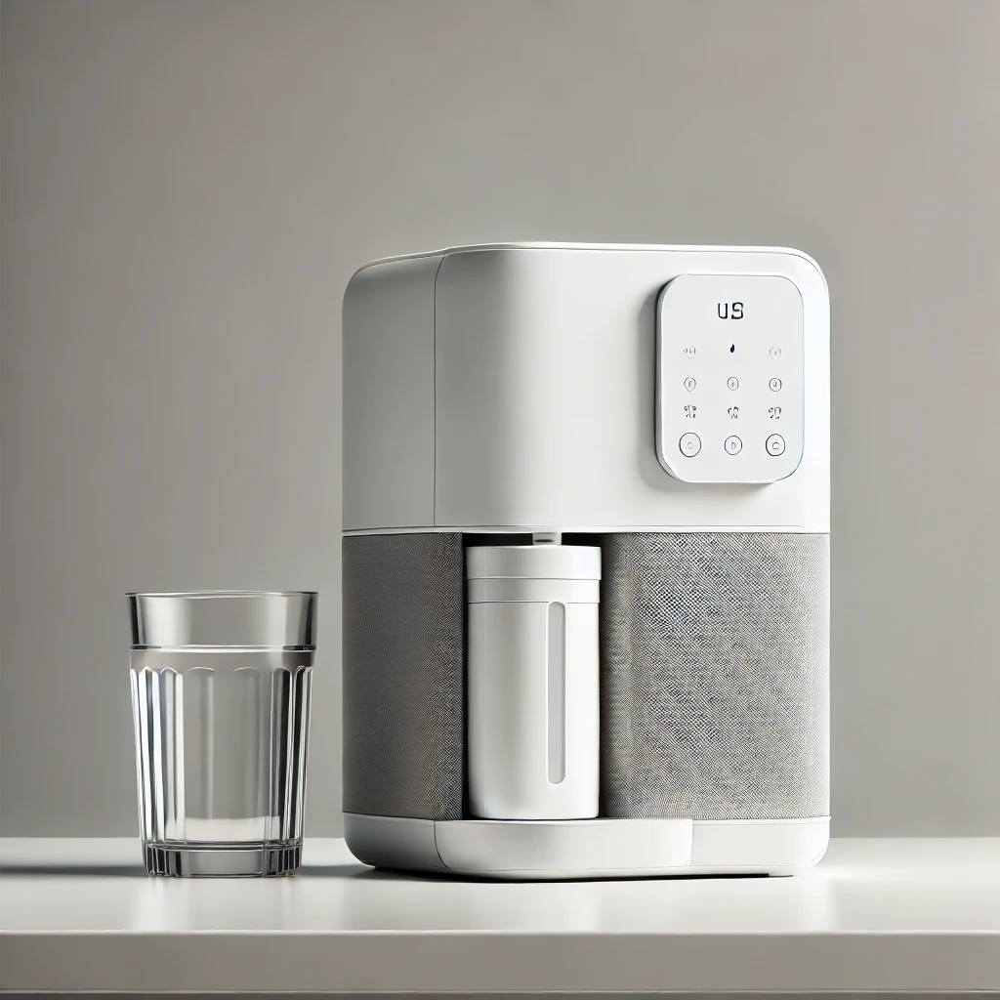

대형 정수기 (대형 식당 및 공공장소용)
대형 식당, 호텔, 병원 등에서 사용할 수 있는 대용량 정수기입니다. 고속 정수 기능과 다단계 필터링 시스템을 갖추고 있습니다. 자동 청소 기능과 함께 안정적인 대량 공급이 가능합니다.
구독 요금: 월 150,000 ~ 200,000 KRW
필터 교체 주기: 3~6개월 / 정기 점검 및 유지보수 포함
구매하기
중형 정수기 (중소형 식당 및 가정용)
카페, 작은 식당 및 가정에서 사용하기 적합한 중형 정수기입니다. UV 살균 기능과 기본 필터링 기능을 제공합니다.
구독 요금: 월 50,000 ~ 100,000 KRW
필터 교체 주기: 6개월 / 정기 점검 및 유지보수 포함
구매하기

소형 정수기 (소형 가정 및 개인용)
작은 가정과 개인용으로 적합한 소형 정수기입니다. 필터 교체가 간편하며 공간 절약형 디자인을 갖추고 있습니다.
구독 요금: 월 20,000 ~ 40,000 KRW
필터 교체 주기: 6개월 ~ 1년 / 간단한 유지보수 포함
구매하기